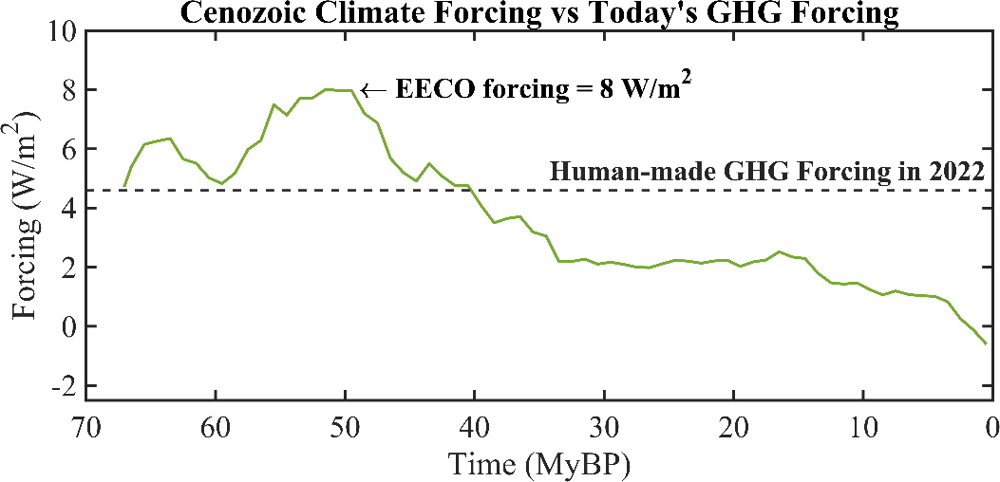
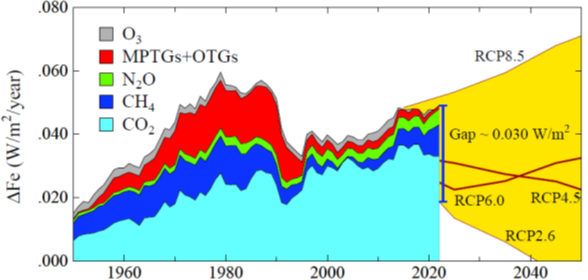

11 Climate Sensitivity
Hansen
Phasedown of emissions cannot restore Earth’s energy balance within less than several decades, which is too slow to prevent grievous escalation of climate impacts and probably too slow to avoid locking in loss of the West Antarctic ice sheet and sea level rise of several meters.
Hansen (2023) PipelinePaper230705 (pdf)
11.1 Climate Feedbacks
Abstract Heinze Earth system models (ESMs) are key tools for providing climate projections under different sce- narios of human-induced forcing. ESMs include a large number of additional processes and feedbacks such as biogeochemical cycles that traditional physical climate models do not consider. Yet, some processes such as cloud dynamics and ecosystem functional response still have fairly high uncertainties. In this article, we present an overview of climate feedbacks for Earth system components currently included in state-of-the-art ESMs and discuss the challenges to evaluate and quantify them. Uncertainties in feedback quantification arise from the in- terdependencies of biogeochemical matter fluxes and physical properties, the spatial and temporal heterogeneity of processes, and the lack of long-term continuous observational data to constrain them. We present an outlook for promising approaches that can help to quantify and to constrain the large number of feedbacks in ESMs in the future. The target group for this article includes generalists with a background in natural sciences and an interest in climate change as well as experts working in interdisciplinary climate research (researchers, lecturers, and students). This study updates and significantly expands upon the last comprehensive overview of climate feedbacks in ESMs, which was produced 15 years ago (NRC, 2003).
11.2 Global Warming Pipeline
Hansen
ECS is the climate sensitivity defined by the Charney study, with ice sheets and GHGs fixed. Earth system sensitivity (ESS) is the complete climate sensitivity in which the climate system – including GHGs and ice sheets, which we refer to (somewhat misleadingly) as slow feedbacks – responds to the imposed forcing.
During the past 800,000 years, CO 2 provided ~80% of GHG climate forcing, i.e., the total GHG forcing is 25% larger than the CO 2 forcing.
The climate sensitivity in which non-CO 2 GHG feedbacks are allowed to change increases from ~4°C to ~5°C. When all feedbacks, including ice sheets, are allowed to respond to the climate forcing, the equilibrium response is approximately doubled, i.e., ESS is ~ 10°C.
Charney defined an equilibrium climate sensitivity (ECS): the eventual global temperature change caused by doubled CO 2 in the idealized case in which ice sheets, vegetation and long- lived GHGs are fixed (except for the specified CO 2 doubling). All other quantities are allowed to change. The ones deemed most significant – clouds, aerosols, water vapor, snow cover and sea ice – change rapidly in response to climate change. Thus, the Charney ECS is also called the “fast feedback” climate sensitivity. Feedbacks can interact in many ways, so their changes are usually calculated in global climate models (GCMs) that can simulate such interactions. Charney implicitly assumed that change of the ice sheets on Greenland and Antarctica – which we will categorize as a “slow feedback” – was not important on the time scale of most public interest. ECS defined by Charney is a useful concept that helps us understand how human-made and natural climate forcings affect climate. We must also consider an Earth system sensitivity, 16 ESS, in which all feedbacks are allowed to respond to a climate forcing. ECS and ESS both depend on the initial climate state 17,18 and direction (warming or cooling) of climate change, but at the present climate state – with ice sheets on Antarctica and Greenland – climate should be about as sensitive in the warmer direction as in the cooler direction. Paleoclimate data indicate that ESS substantially exceeds ECS, i.e., when feedbacks that Charney kept fixed are allowed to change, climate sensitivity increases. As Earth warms, ice sheets shrink and the atmosphere contains more CO 2 , CH 4 and N 2 O, at least on glacial-interglacial time scales.
e-folding
how long it would take for the atmospheric CO2 levels to drop to 1/e (37%) of the atmospheric CO2 level after the addition of a pulse of CO2.* (see MODTRAN Section)
The e-folding time – the time for surface temperature to reach 63% of its equilibrium response – was about a century.
The physics is straightforward. If the delay were a result of a fixed source of thermal inertia, say the ocean’s well-mixed upper layer, response time would increase linearly with ECS because most climate feedbacks come into play in response to temperature change driven by the forcing, not in direct response to the forcing. Thus, a model with ECS of 4°C takes twice as long to reach full response as a model with ECS of 2°C, if the mixed layer provides the only heat capacity. However, while the mixed layer is warming, there is exchange of water with the deeper ocean, which slows the mixed layer warming. The longer response time with high ECS allows more of the ocean to come into play. If mixing into the deeper ocean is approximated as diffusive, surface temperature response time is proportional to the square of climate sensitivity.
If ECS is 4°C, more warming is in the pipeline than widely assumed.
Hansen (2022) Global Warming in the Pipeline (pdf)
Hansen (2022) Earth’s Energy Imbalance and Climate Response Time
Hansen
Earth’s climate is characterized – ominously – by amplifying feedbacks and delayed response. Feedbacks and delayed response have been recognized for at least 40 years, but they are difficult to quantify. Feedbacks determine climate sensitivity to applied forcing. Delayed response makes human-made climate forcing a threat to today’s public and future generations because of the practical difficulty of reversing the forcing once consequences become apparent to the public. Thus, there is a premium on knowledge of climate sensitivity and response time, and the implications must be delivered to the public as soon as possible.
The 1979 Charney study 4 considered an idealized climate sensitivity in which ice sheets and non-CO2 GHGs are fixed. The Charney group estimated that the equilibrium response to 2×CO2 , a forcing of 4 W/m2 , was 3°C, thus an ECS of 0.75°C per W/m2 , with one standard deviation uncertainty σ = 0.375°C. Charney’s estimate stood as the canonical ECS for more than 40 years. The current IPCC report concludes that 3°C for 2×CO 2 is their best estimate for ECS.
We compare recent glacial and interglacial climates to infer ECS with a precision not possible with climate models alone. Uncertainty about Last Glacial Maximum (LGM) temperature has been resolved independently to find peak LGM cooling 7.0 ± 1°C (2σ, 95% confidence) at 21-18 kyBP. We show that, accounting for polar amplification, these analyses are consistent with the 5.8 ± 0.6°C LGM cooling of land areas between 45°S and 35°N using the temperature- dependent solubility of dissolved noble gases in ancient groundwater. The forcing that maintained the 7°C LGM cooling was the sum of 2.25 ± 0.45 W/m 2 (2σ) from GHGs and 3.5 ± 1.0 W/m 2 (2σ) from the LGM surface albedo, thus 5.75 ± 1.1 W/m 2 (2σ). ECS implied by the LGM is thus 1.22 ± 0.29°C (2σ) per W/m 2 , which, at this final step, we round to 1.2 ± 0.3°C per W/m 2 . For transparency, we have combined uncertainties via simple RMS (root-mean-square). ECS as low as 3°C for 2×CO 2 is excluded at the 3σ level, i.e., with 99.7% confidence.
More sophisticated mathematical analysis, which has merits but introduces opportunity for prior bias and obfuscation, is not essential; error assessment ultimately involves expert judgement. Instead, focus is needed on the largest source of error: LGM surface albedo change, which is uncertain because of the effect of cloud shielding on the efficacy of the forcing. As cloud modeling is advancing rapidly, the topic is ripe for collaboration of CMIP 58 (Coupled Model Intercomparison Project) with PMIP 59 (Paleoclimate Modelling Intercomparison Project). Simulations should include at the same time change of surface albedo and topography of ice sheets, vegetation change, and exposure of continental shelves due to lower sea level.
Knowledge of climate sensitivity can be advanced further via analysis of the wide climate range in the Cenozoic era.
Climate response time
We expected climate response time – the time for climate to approach a new equilibrium after imposition of a forcing – to become faster as mixing of heat in ocean models improved. 79 That expectation was not met when we compared two generations of the GISS GCM. The GISS (2020) GCM is demonstrably improved 34,35 in its ocean simulation over the GISS (2014) GCM as a result of higher vertical and horizontal resolution, more realistic parameterization of sub-grid scale motions, and correction of errors in the ocean computer program.
Yet the time required for the model to achieve 63% of its equilibrium response remains about 100 years. There are two reasons for this, one that is obvious and one that is more interesting and informative. The Charney report recognized that clouds were a main cause of a wide range in ECS estimates. Today, clouds still cast uncertainty on climate predictions.
Fast EEI response – faster than global temperature response – has a practical effect: observed EEI understates the reduction of climate forcing required to stabilize climate. Although the magnitude of this effect is uncertain, it makes the task of restoring a hospitable climate and saving coastal cities more challenging. On the other hand, long climate response time implies the potential for educated policies to affect the climate outcome before the most undesirable consequences occur.
With climate in a state of disequilibrium, how much time do we have before we pass the point of no return, the point where major climate impacts are locked in, beyond our ability to control? That’s a complex matter; it requires understanding of “slow” feedbacks, especially ice sheets. It also depends on how far climate is out of equilibrium. Thus, we first consider the full Earth system sensitivity.
Earth system sensitivity (ESS)
The Cenozoic era – the past 66 million years – provides an opportunity to study Earth system sensitivity via a consistent analysis for climate ranging from hothouse conditions with Earth 15°C warmer and sea level 60 m higher than preindustrial climate to glacial conditions with Earth 7°C cooler and sea level 120 m lower than preindustrial.
This whole-Cenozoic approach defines the CO2 history more accurately than CO2 proxy measurements.

The Cenozoic provides a perspective on present greenhouse gas (GHG) levels. The dashed line in Fig. marks the “we are here” level of GHG climate forcing, which is more than half of the forcing that maintained EECO global temperature of +15°C relative to the Holocene. Today’s GHG forcing of 4.6 W/m 2 is relative to mid-Holocene CO 2 of 260 ppm; we present evidence in Section 4.3 that 260 ppm is the natural Holocene CO 2 level. GHG forcing today already is well above the level needed to deglaciate Antarctica, if the forcing is left in place long enough. We are not predicting deglaciation of Antarctica on a time scale that today’s people would care about – rather we are drawing attention to how far today’s climate is out of equilibrium with today’s GHG level. The extent that the climate is out of equilibrium with atmospheric composition is one measure of how strongly humanity is pushing the climate system. Hope of approximately stabilizing climate requires removing the disequilibrium by reducing human-made climate forcing. The danger is that – if deglaciation is allowed to get well underway – it will become difficult if not impossible to prevent large sea level rise.
**Aerosols*
(resumed see under Athmosphere)
Earth’s energy imbalance
EEI is hard to measure, a small difference between two large quantities (Earth absorbs and emits about 240 W/m 2 averaged over the entire planetary surface), but change of EEI can be well-measured from space. Absolute calibration is from the change of heat in the heat reservoirs, mainly the global ocean, over a period of at least a decade, as required to reduce error due to the finite number of places that the ocean is sampled. 87 EEI varies year-to- year, largely because global cloud amount varies with weather and ocean dynamics, but averaged over several years EEI helps inform us about what is needed to stabilize climate.
EEI has doubled since the first decade of this century.
This increase is one basis for our prediction of post-2010 acceleration of the global warming rate. The EEI increase may be partly due to restrictions on maritime aerosol precursor emissions imposed in 2015 and 2020, but the growth rate of GHG climate forcing also increased in 2015 and since has remained at the higher level
The reduction of climate forcing required to reduce EEI to zero is greater than EEI. The added burden is a result of ultrafast cloud feedback.
Cloud feedbacks are only beginning to be simulated well, but climate sensitivity near 1.2°C per W/m2 implies that the net cloud feedback is large, with clouds accounting for as much as half of equilibrium climate sensitivity.
Global warming and sea level rise in the pipeline
Cenozoic CO2 and climate histories reveal where climate is headed, if present human-made climate forcings remain in place. GHG climate forcing is now 4.6 W/m2 relative to the mid- Holocene (7kyBP) or 4.1 W/m2 relative to 1750. We argue that 4.6 W/m2 is the human-made forcing, but there is little point to debate whether it should be 4.6 W/m2 or 4.1 W/m2 because the GHG forcing is increasing 0.5 W/m2 per decade.
One merit of consistent analysis for the full Cenozoic era is revelation that the human-made climate forcing exceeds the forcing at transition from a largely ice-free planet to glaciated Antarctica, even with inclusion of a large, negative, aerosol climate forcing. Equilibrium global warming for today’s GHG level is 10°C for our central estimate ECS = 1.2°C ± 0.3°C per W/m2 , including amplifications from disappearing ice sheets and non-CO2 GHGs. Aerosols reduce equilibrium warming to about 8°C. Equilibrium sea level change is + 60 m (about 200 feet).
Hansen (2023) PipelinePaper230705 (pdf)
11.2.1 Equilibrium Warming
Hansen
Some people on Twitter interpreted the statement: “Equilibrium global warming including slow feedbacks for today’s human-made greenhouse gas (GHG) climate forcing (4.1 W/m2) is 10°C, reduced to 8°C by today’s aerosols” in our draft paper “Global Warming in the Pipeline” as indicating that the world is committed to warming of 10°C. The word “committed” or “commit” does not appear in our paper. If it had, it would have been in a statement such as “the world needs to commit to global cooling of about 1°C for the sake of young people and future generations.”
Equilibrium warming is a useful concept employed for more than a century, e.g., in the studies by Arrhenius in the 1890s and Charney in the 1970s. Equilibrium response is the global temperature change after the climate system restores energy balance following imposition of a climate forcing. One merit of our analysis of Cenozoic (past 66 million years) climate is that it reveals that the present human-made GHG (greenhouse gas) forcing is already greater than the GHG forcing at the transition from a nearly unglaciated Antarctica to a glaciated continent. Yes, if we leave atmospheric composition as it is today, sea level will eventually rise about 60 m (200 feet). Of course, none of us would be there to see it. However, it’s not the new equilibrium at +200 feet that’s of most concern, it’s the chaos that ensues once ice sheet collapse begins in earnest.
That chaos was the topic of our paper[1] “Ice Melt, Sea Level Rise and Superstorms,” which was blackballed by IPCC (Intergovernmental Panel on Climate Change). In that paper, we conclude that continuation of GHG emissions along the path that the world is on will lead to shutdown of the overturning (North Atlantic and Southern Ocean) circulations this century and sea level rise of several meters on a time scale of 50-150 years. As yet, little has changed to get us off that path.
Climate Hocus-Pocus
Physics is a description of the real world. So, climate science should be focused on data. That’s the way science is supposed to work. However, IPCC is focused on models. Not just global climate models (GCMs), but models that feed the models, e.g., Integrated Assessment Models (IAMs) that provide scenarios for future GHG levels. These models are useful and even necessary for analysis of the complex climate system, but sometimes the models contain hocus-pocus. As we mention in our current paper, they can assume, in effect, that “a miracle will occur.” So, the models need to be continually checked against the real world.

Fig: Annual growth of climate forcing by GHGs including the part of O3 forcing not included in the CH4 forcing. MPTG and OTG are Montreal Protocol and Other Trace Gases.
Figure compares the real-world growth rate of GHG forcing with the RCP2.6 scenario, which is used in IPCC’s AR5 report as a scenario that would limit global warming to about 2°C. Figure 28 shows that an enormous gap has opened between the real world and RCP2.6. The “miracle” in RCP2.6 is largely an assumption of negative emissions via power plants that burn biofuels, capturing and sequestering the CO2.
Also beware of nations promising “net zero” emissions without defining what they mean. As discussed in our paper, the present policy approach is not working and it is not likely to work. For example, the cost to close the gap in Figure via carbon capture and storage is estimated as $3.4-7.0 trillion per year – that’s the annual, growing cost. That miracle is not likely to happen.
It’s disappointing that scientists who once contributed to research progress, but now enjoy twittering, do not correct a nonscientist’s assumption that equilibrium warming = committed warming but instead allow the misconception to persist and then use it to insist that we are “wrong” in our assessment.
Claim that current scientific literature points to eventual global warming being kept “well below 2°C” as being consistent with real world trends and policies is egregious, an uncritical acceptance of models and the assumptions that went into them.
Hansen (2023) Equilibrium Warming = Committed Warming?
Hausfather
Media reports frequently claim that the world is facing “committed warming” in the future as a result of past emissions, meaning higher temperatures are “locked in”, “in the pipeline” or “inevitable”, regardless of the choices society takes today.
The best available evidence shows that, on the contrary, warming is likely to more or less stop once carbon dioxide (CO2) emissions reach zero, meaning humans have the power to choose their climate future.
The world would be around 0.4C warmer if CO2 and aerosol emissions go to zero, compared to zero CO2 emissions alone.
Hausfather (2021) Explainer: Will global warming ‘stop’ as soon as net-zero emissions are reached?
(NB - See critical comments in this link)
11.3 ECS - Equilibrium Climate Sensitivity
ECS
Climate sensitivity is defined as the equilibrium change in global and annual mean surface air temperature, \(\Delta T\), due to an increment in downward radiative flux, \(\Delta R_{f}\) , that would result from sustained doubling of atmospheric \(CO_2\) over its preindustrial value (2 x \(CO_2\) ).
Studies based, on observations, energy balance models, temperature reconstructions, and global climate models (GCMs) have found that the probability density distribution of \(\Delta T\) is peaked in the range 2.0°C ≤ \(\Delta T\) ≤ 4.5°C, with a long tail of small but finite probabilities of very large temperature increases.
An important parameter in climate science is the equilibrium or long-run response in the global mean surface temperature to a doubling of atmospheric carbon dioxide.
In the climate science community, this is called the equilibrium climate sensitivity ECS. With reference to climate models, this is calculated as the increase in average surface temperature with a doubled CO2 concentration relative to a path with the pre-industrial CO2 concentration. This parameter also plays a key role in the geophysical components in the IAMs.
Given the importance of the ECS in climate science, there is an extensive literature estimating probability density functions. These pdfs are generally based on climate models, the instrumental records over the last century or so, paleoclimatic data such as estimated temperature and radiative forcings over ice-age intervals, and the results of volcanic eruptions. Much of the literature estimates a probability density function using a single line of evidence, but a few papers synthesize different studies or different kinds of evidence.
The IPCC Fifth Assessment report (AR5) reviewed the literature quantifying uncertainty in the ECS and highlighted five recent papers using multiple lines of evidence (IPCC, 2014). Each paper used a Bayesian approach to update a prior distribution based on previous evidence (the prior evidence usually drawn from instrumental records or a climate model) to calculate the posterior probability density function.
Gilligham (2015) Modelling Uncertainty (pdf)
11.3.1 Roe and Baker Distribution
Abstract
Uncertainties in projections of future climate change have not lessened substantially in past decades. Both models and observations yield broad probability distributions for long-term increases in global mean temperature expected from the doubling of atmospheric carbon dioxide, with small but finite probabilities of very large increases. We show that the shape of these probability distributions is an inevitable and general consequence of the nature of the climate system, and we derive a simple analytic form for the shape that fits recent published distributions very well. We show that the breadth of the distribution and, in particular, the probability of large temperature increases are relatively insensitive to decreases in uncertainties associated with the underlying climate processes.
Memo Roe and Baker
What determines the distribution shape of ECS and in particular, the high \(\Delta T\) tail? To what extent we can decrease the distribution width?
Climate consists of a set of highly coupled, tightly interacting physical processes. Understanding these physical processes is a massive task that will always be subject to uncertainty. How do the uncertainties in the physical processes translate into an uncertainty in climate sensitivity?
Explanations for the range of predictions of DT, summarized in (14), have focused on (i) uncertainties in our understanding of the individual physical processes (in particular, those associated with clouds), (ii) complex interactions among the individual processes, and (iii) the chaotic, turbulent nature of the climate system, which may give rise to thresholds, bifurcations, and other discontinuities, and which remains poorly understood on a theoretical level. We show here that the explanation is far more fundamental than any of these.
We use the framework of feedback analysis to examine the relationship between the uncertainties in the individual physical processes and the ensuing shape of the probability distribution of \(\Delta T\). Because we are considering an equilibrium temperature rise, we consider only time-independent processes.
Roe and Baker (2007) Climate Sensitivity (pdf)
Memo Hannart
RB addressed these questions using rather simple theoretical considerations and reached the conclusion that reducing uncertainties on climate feedbacks and underlying climate processes will not yield a large reduction in the envelope of climate sensitivity. In this letter, we revisit the premises of this conclusion. We show that it results from a mathematical artifact caused by a peculiar definition of uncertainty used by these authors.
Reducing inter-model spread on feedbacks does in fact induce a reduction of uncertainty on climate sensitivity, almost proportionally. Therefore, following Roe and Baker assumptions, climate sensitivity is actually not so unpredictable.
The main originality of RB07 approach consists in analyzing explicitly the way uncertainties on \(f\), due to a limited understanding of their underlying physical processes, prop- agates into uncertainties on \(\Delta T\): assuming \(f\) is a random variable with mean \(f\) and standard deviation \(\sigma_f\) , RB07 uses this simple probabilistic model to highlight several fundamental properties of uncertainty propagation from feedbacks to climate sensitivity. The most prominent conclusion of this analysis is that reducing uncertainties on \(f\) does not yield a large reduction in the uncertainty of \(\Delta T\), and thus that improvements in the understanding of physical processes will not yield large reductions in the envelope of future climate projections. We show that this conclusion is a mathematical artifact with no connection whatsoever to climate.
RB07 uses the feedback analysis framework. Denoting \(\Delta T_0\) the Planck temperature response to the radiative perturbation and \(f\) the feedback gain (RB07 refers to it as feedback factor), they obtain:
\[\Delta T = \frac{\Delta T_0}{1 - f}\]
RB07 then assumes uncertainty on Planck response to be negligible so that the entire spread on \(\Delta T\) results from the uncertainty on the global feedback gain \(f\). To model this uncertainty, RB07 assumes that \(f\) follows a Gaussian distribution with mean \(\overline{f}\) , standard deviation \(\sigma_f\) and implicit truncation for \(f\) > 1. Then, they derive an exact expression of the distribution of \(\Delta T\). This simple probabilistic climatic model is used by RB07 to analyze the way uncertainties on \(f\), due to a limited understanding of underlying physical processes, propagates into uncertainties on \(\Delta T\). Their analysis highlights two fundamental properties:
Amplification: The term in \(\frac{1}{1-f}\) amplifies uncertainty on feedbacks, all the more intensely as \(f\) is close to (though lower than) one. Small uncertainties on feedbacks are thus converted in large uncertainties on the rise of temperature.
Insensitivity: reducing uncertainty on \(f\) has little effect in reducing uncertainty on \(\Delta T\), also stated as the breadth of the distribution of \(\Delta T\) is relatively insensitive to decreases in \(\sigma_f\).
We are puzzled by the second property, that is, the claimed insensitivity of uncertainty on \(\Delta T\) to uncertainty on feedbacks. The reason why one may find this second assertion puzzling, is that it intuitively seems to contradict the first.
While the probability \(P(\Delta T \in [4.5°C, 8°C])\) may be of interest practically, this metric is irrelevant to describe the breadth of the distribution of climate sensitivity which was RB07 explicit intent. To address this question, any measure of distribution spread chosen amongst those classically used in Descriptive Statistics is more appropriate.
(Hugo Mathjax don’t render correctly here:?? OK in rpad !! OK in mathjaxtest!!) With such measures when the spread of feedback parameter \(S_f\) decreases, the resulting spread of climate sensitivity \(S_{\Delta T}\) values also decreases. Further the decrease is approximately linear for \(S_f\) small and tends to be steeper for larger values of \(S_{f}\) .
Memo Jules and James Roe and Baker have attempted to justify the pdfs that have been generated as not only reasonable, but inevitable on theoretical grounds
RB’s basic point is that if “feedback” \(f\) is considered to be Gaussian, then sensitivity = \(\lambda_0/(1-f)\) is going to be skewed, which seems fair enough.
Where I part company with them is when they claim that this gives rise to some fundamental and substantial difficulty in generating more precise estimates of climate sensitivity, and also that it explains the apparent lack of progress in improving on the long-standing 1979 Charney report estimate of 1.5-4.5C at only the “likely” level.
Stoat’s complaints also seem pertinent: \(f\) cannot really be a true Gaussian, unless one is willing to seriously consider large negative sensitivity, and even though a Gaussian is a widespread and often reasonable distribution, it is hard to find any theoretical or practical basis for a Gaussian abruptly truncated at 1.
I can think of several alternative theories as to why the uncertainty in the IPCC estimate has not reduced. The probabilistic methods generally used to generate these long-tailed pdfs are essentially pathological in their use of a uniform prior (under the erroneous belief that this represents “ignorance”), together with only looking at one small subset of the pertinent data at a time, and therefore do not give results that can credibly represent the opinions of informed scientists.
There may also be the sociological effect of this range as some sort of anchoring device, which people are reluctant to change despite its rather shaky origins. Ramping up uncertainty (at least at the high end) is a handy lever for those who argue for strong mitigation, and it would also be naive to ignore the fact that scientists working in this area benefit from its prominence.
Jules and James: Comment on RB
Memo Gillingham
Note that the US government used a version of the Roe and Baker distribution calibrated to three constraints from the IPCC for its uncertainty estimates (IAWG, 2010). Specifically, the IAWG Report modified the original Roe and Baker distribution to assume that the median value is 3.0°C, the probability of being between 2 and 4.5°C is two-thirds, and there is no mass below zero or above 10°C. The modified Roe and Baker distribution has a higher mean ECS than any of the models (3.5°C) and a much higher dispersion (1.6°C as compared to 0.84°C from Olsen et al. 2012).

11.3.3 GCM free Approach
Memo
- GCM free approach
The atmosphere is a complex system involving turbulent processes operating over a wide range of scales starting from millimeters at the Kolmogorov dissipation scale up to the size of the Earth, spanning over 10 orders of magni- tudes in space.
The dynamics are sensitive to initial conditions and there are deterministic predictability limits that are roughly equal to the eddy turn-over time (lifetime) of structures.
For planetary scale structures in the atmosphere, the overall deterministic prediction limit of about 10 days corresponds to the scaling transition timescale τ w from the weather regime to the macroweather regime.
The atmospheric components of GCMs exhibit the same weather-macroweather scaling transition as the atmosphere and similar predictability limits. Beyond this horizon, the internal variability has to be interpreted stochastically so that a single GCM run is only one realization of the random process; at these timescales, weather models effectively become stochastic macroweather generators. For projec- tions over multi-decadal timescales and beyond, multi-model ensembles (MME) that include several models are used. The mean of the MME is taken to obtain the deterministic forced component of temperature variability and average out the internal variability (Collins et al. 2013).
Emergent properties of the Earth’s climate, i.e. proper- ties which are not specified a priori, are then inferred from GCM simulations.
The equilibrium climate sensitivity (ECS) is such a property; it refers to the expected temperature change after an infinitely long time following a doubling in carbon dioxide ( CO 2 ) atmospheric concentration.
Another is the transient climate response (TCR), which is defined as the change in temperature after a gradual doubling of CO 2 atmospheric concentration over 70 years at a rate of 1% per year.
However, it is not clear whether such emer- gent properties from computational models can be taken as genuine features of the natural world.
The difficulty is that each GCM has its own climate (“structural uncertainty”) and this leads to very large discrepancies in ECS and TCR between GCMs; this underscores the need for qualitatively different approaches which can narrow down the properties of the real climate directly from observations.
The ecological consequences of global warming could be dire; therefore, better constraining climate sensitivity is of utmost importance in order to meet the urgency of adjusting economical and environmental policies.
Multidecadal climate projections rely almost exclusively on deterministic global climate models (GCMs) in spite of the fact that there are still very large structural uncertainties between Coupled Model Intercomparison Project phase 5 (CMIP5) GCMs, i.e. each has its own climate, rather than the real world climate.
Climate skeptics have argued that IPCC projections are untrustworthy precisely because they are entirely GCM based. While this conclusion is unwarranted, it underscores the need for independent and qualitatively different approaches. It is therefore significant that the alternative GCM-free approach we present here yields comparable results albeit with smaller uncertainty.
According to our projections made to 2100, to avert a 1.5 K warming, future emissions will be required to undergo drastic cuts similar to RCP 2.6, for which we found a 46% probability to remain under the said limit; it is virtually cer- tain that RCP 4.5 and RCP 8.5-like futures would overshoot.
Even a 2.0 K warming limit would surely be surpassed by 2100 under RCP 8.5 and probably also under RCP 4.5, with only a 6% chance of remaining under the limit. The safest option remains RCP 2.6 which we project to remain under 2.0 K with very high confidence. The question remains whether it is at all realistic given that it relies strongly on the massive deployment of speculative negative emission technologies.
On the other hand, our model has obvious limitations since it assumes a linear stationary relationship between forcing and temperature, neglecting nonlinear interac- tions which could arise as the system evolves, as it cur- rently warms.
In particular, so-called tipping points could be reached in the coming century which would lead to a breakdown of the linear model proposed. Such potential behaviours are of critical value for improving future projections, but they have not yet been observed with high confidence even in GCMs.
This underlines the need to exploit paleoclimate archives to achieve a better understanding of low-frequency natural variability, namely the transition scale from the macroweather regime to the climate regime.
In this study, we have assumed the increased variability in the climate regime to be strictly a result of forcing, but internal modes of variability could also have a significant contribution for longer timescales.
11.4 Remote Sensing of Tipping Points
Many aspects of the climate are sensitive to small disrupting changes that could trigger an abrupt change in the system into a new stable state. Even at relatively low levels of global warming, systems that exhibit these instabilities could accelerate global warming through climate feedbacks or cause other cascading impacts. These ‘tipping elements’, or ‘large-scale discontinuities in the climate system’, as UNFCCC IPCC reports refer to them, have been assigned successively greater risk with each IPCC report since 2001.
Proximity to a tipping point may be indicated in remote sensing data by characteristic statistical changes. Early warning indicators can be developed using an increasing trend in the lag-1 autocorrelation when it is correlated with an increase in variance. Niklas Boers of the Potsdam Institute for Climate Impact Research highlighted recent work using these characteristic statistical changes to identify the reduction in a system’s resilience, and has developed early warning indicators for Arctic sea-ice extent, Greenland ice sheet, Atlantic Meridional Overturning Circulation, the Amazon rainforest and the South American Monsoon system. The technique has also been applied to aquatic ecosystems and marine anoxic events. Automatic detection of extreme events and abrupt shifts in climate datasets using edge detection algorithms.
11.5 Exxon’s 1980s Scenario
Exxon’s research warned of the risks of climate change from human-cause greenhouse gas emissions 40 years ago. Then came the ‘sea change’ at the energy company.

After deepening the company’s understanding of an environmental problem it suspected could harm its business, Exxon put its muscle behind efforts to manufacture doubt about the reality of global warming. They deliberately created doubt when their internal research confirmed how serious a threat it was.